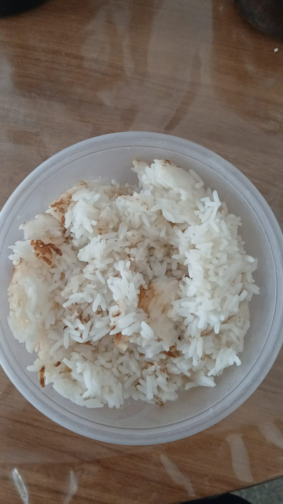

O Arroz Branco
Gente, o arroz já faz parte da cultura brasileira, tem nem o que fazer, arroz branco soltinho e
basicão faz bem demaisss!
Ingredientes
- 2 colheres de sopa de óleo
- 250 ml de arroz
- Água
- Sal
Preparo
- Coloca a água para ferver
- Coloca o óleo na panela
- Joga o arroz no óleo quente
- Sal a gosto no arroz fritando
NÃO ESQUECE DE MEXER O ARROZ

Home